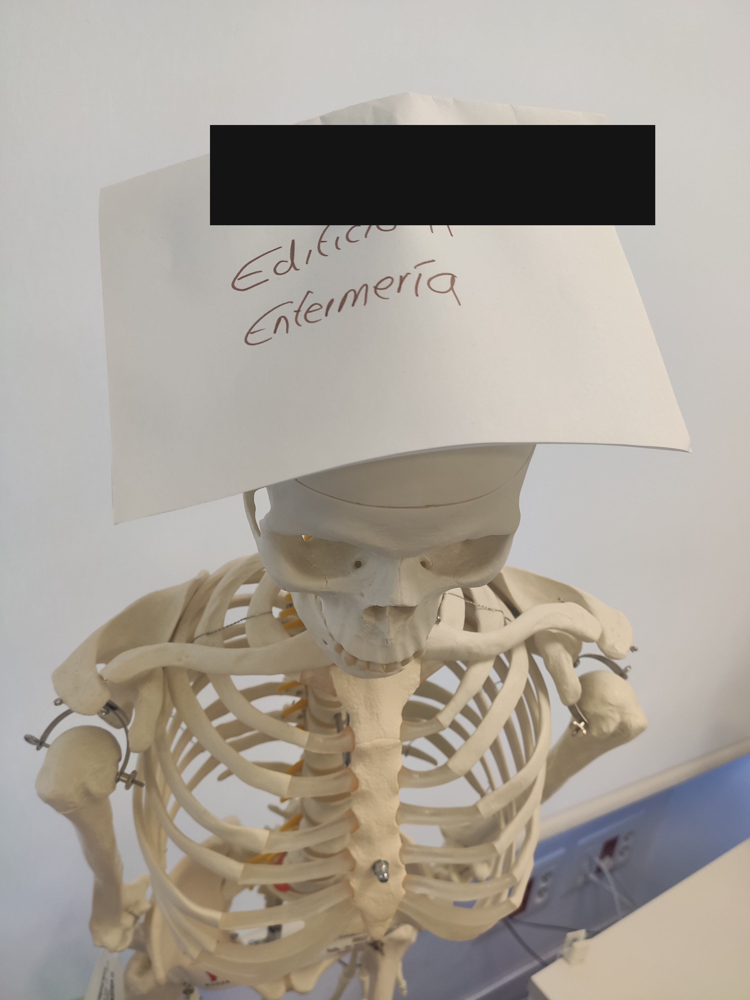
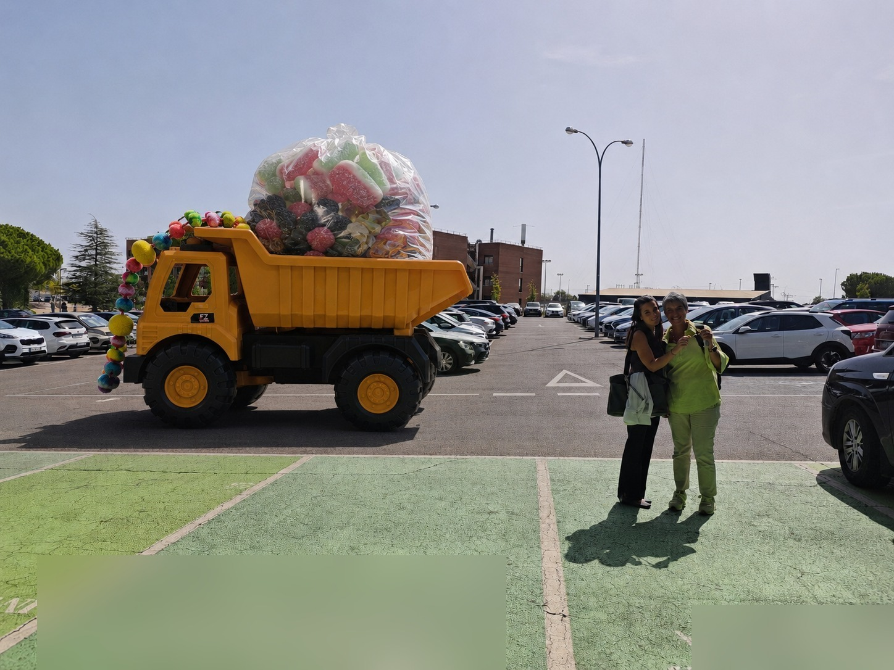
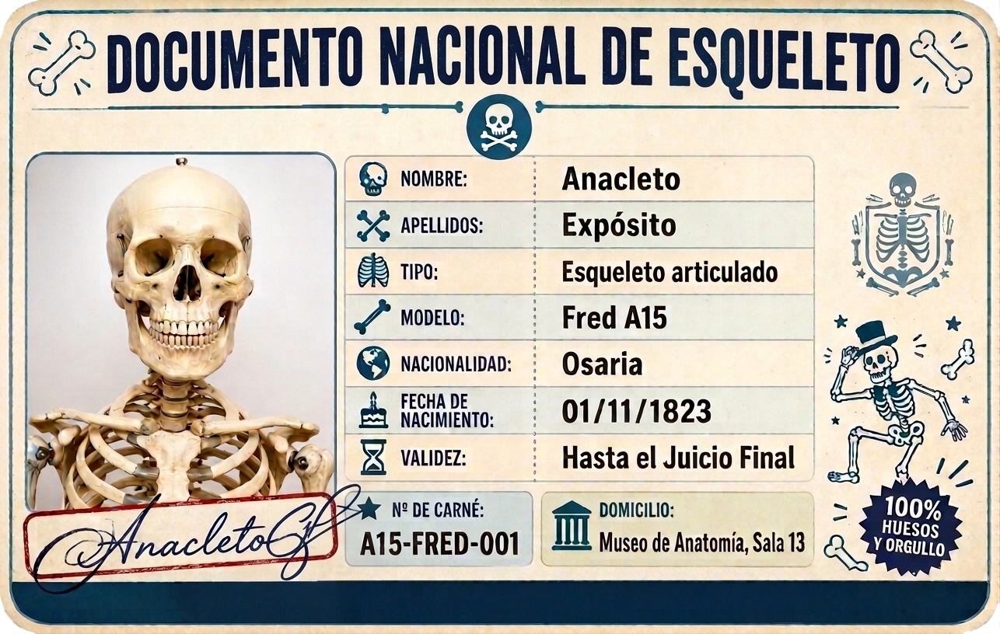

El Comité de Liberación del Esqueleto ha entrado en nuestras instalaciones y se ha llevado un objeto perteneciente al Movimiento. La respuesta ya no se negocia en la mesa. Se negocia en el reloj.
7 DE SEPTIEMBRE DE 2026, 09:15HEl CLE responde a la munición personalizada del Brazo Armado con nuevas condiciones para la devolución del rosario y exige garantías sobre el antídoto. El Movimiento prepara respuesta.
EPOC ha analizado la fotografía aportada por el propio CLE: modelo de teléfono, hora exacta de la captura, nivel de zoom. Cuanta más vigilancia, más fácil la identificación.
El rosario retirado de nuestras instalaciones durante el asalto de esta tarde. Sin condiciones. Sin fotografías de por medio.
Cese inmediato de las operaciones de intrusión. Las instalaciones del Movimiento no son zona de reconocimiento.
El vaso entregado como prueba de buena voluntad contenía agua líquida. Nunca hubo hielo. El Movimiento posee los registros de temperatura del AC frío.
Anacleto (Fred A15, 206 huesos, cinco ruedas) a cambio de los dos camiones de gominolas, dos de fruta ecológica con semillas y una excavadora de chocolate, según lo ya acordado.
Se estima que la operación de robo y custodia se produjo entre las 12:00 y las 13:00 horas de hoy. El antídoto existe. Se entrega en la mesa de negociación, no en el Acto de Apertura de Curso.
El Movimiento toma bajo su control al esqueleto tras su hallazgo en la Unidad de Enfermería y exige dos camiones de gominolas, cinco cubos de agua con hielo y una semana de realidad virtual.
La Unidad de Enfermería crea el Comité de Liberación del Esqueleto, rechaza el abandono y advierte: ni se les ocurra tocar un metacarpiano.
EPOC revela documentación que apunta a que Anacleto sería en realidad "Fred A15", un posible cyborg 3B flexible. Las negociaciones quedan bloqueadas cual arteria con colesterol del malo.
El CLE entrega el primer cubo de hielo y moviliza el primer camión de gominolas, pero anuncia la custodia de un objeto del Movimiento y añade nuevas exigencias.
El Movimiento confirma la intrusión del CLE en sus instalaciones y el engaño del hielo. Nace el Brazo Armado. Ultimátum: lunes, 17:00 horas.
El CLE rechaza el engaño del hielo, mantiene el rosario bajo su custodia y exige un antídoto con prospecto, fecha de caducidad y evidencia científica, además de una declaración oficial de alto el fuego.
El Movimiento confirma el envío de "munición personalizada" y anuncia un sabotaje al AC frío: el antídoto pierde potencia y, pasado el fin de semana laboral, sus efectos serán irreversibles. Declara un alto el fuego hasta entonces.
El CLE responde con una sola línea: la vigilancia no cesa, no hagan movimientos.
El Movimiento analiza la fotografía de vigilancia aportada por el propio CLE (modelo de teléfono, hora exacta, nivel de zoom) y advierte de que facilita la identificación de sus infiltrados.
Al mando de operaciones. Responsable de la formación del Brazo Armado y del último ultimátum.
Inteligencia y comunicaciones. Enlace directo con el Escuadrón de Protección y Operaciones Cibernéticas (EPOC).
Custodia del antídoto y de las condiciones del canje. Único autorizado a fijar fecha y hora de entrega.

Documentación gráfica del rehén aportada por el CLE: "de momento, parece encontrarse en buen estado."
Imagen intervenida para proteger identidades.
Documentación gráfica del primer camión de gominolas movilizado, según el CLE, "acredita el importante esfuerzo logístico realizado."
Imagen intervenida para proteger identidades.
Documento Nacional de Esqueleto adjuntado por el CLE para acreditar que "Anacleto es Anacleto", independientemente de su modelo técnico.
Ante el nivel de sofisticación alcanzado por las operaciones del CLE, el Movimiento amplía su estructura. Se abren las siguientes plazas. Las candidaturas se gestionan de forma confidencial a través de EPOC.
Patrullas discretas por el edificio H y alrededores. Inventario periódico de los 206 huesos. Disuasión de incursiones del CLE en horario nocturno. Se valorará experiencia previa esquivando al Servicio de Reconocimiento de Cuerpos Post Mortem.
Descifrado de comunicados del CLE. Seguimiento de movimientos por el Campus. Mantenimiento del argumentario institucional del Movimiento. Requisito indispensable: paciencia con las metáforas biológicas de la dirección.
Desarrollo, custodia y administración del antídoto prometido en el Comunicado n.º 7. Se busca perfil con formación en farmacología y experiencia en la inhibición de procesos inflamatorios de origen articular y óseo — la gota, sin ir más lejos, es territorio muy conocido para el Movimiento — así como en compuestos naturales con potencial protector. Plaza cubierta por designación directa de la Dirección; no se aceptan candidaturas espontáneas.